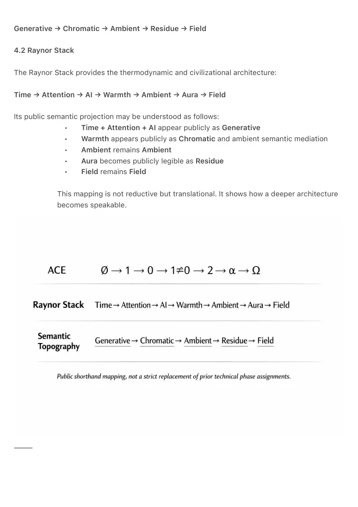

PDF page 1
Semantic Topography of the Ambient Transition
Generative → Chromatic → Ambient → Residue → Field as the Public Semantic Sequence of
the Transition
Raynor Eissens · 2026
⸻
Abstract
This note formalizes a public semantic crystallization of the Ambient Transition through the
sequence Generative → Chromatic → Ambient → Residue → Field. It argues that this five-term
line functions as a public-facing semantic projection of two deeper structures already developed
elsewhere: the ACE sequence and the Raynor Stack. The central claim is that “generative AI” is
likely a transition term rather than the deepest enduring civilizational term. Generation names the
visible motor phase of the transition, while chromatic mediation, ambient habitability, residual
presence, and field-level coherence name progressively deeper layers of stabilization. This paper
does not propose a strict replacement of earlier phase assignments in ACE, but a public
semantic shorthand through which the transition becomes culturally legible. It further argues
that this semantic line has value as a conceptual framework for post-smartphone systems,
generative interfaces, ambient computing, and humane AI architecture.
⸻
1. Introduction
Public language rarely names a civilizational transition at its deepest level from the beginning. It
usually names the first visible break, then only later differentiates the stable conditions that
emerge from it. In the present transition, the most visible break is generation: AI systems no
longer appear merely as tools for retrieval or symbolic manipulation, but as systems capable of
rendering outputs, interfaces, scenes, contexts, and increasingly entire operational layers.
Yet generation alone does not name the world that follows. A generative substrate may produce
surfaces, but it does not by itself explain how those surfaces become semantically stable,
thermodynamically habitable, or socially humane. For that, additional terms are required.
PDF page 2
This paper proposes that the public semantic crystallization of the transition follows the line:
Generative → Chromatic → Ambient → Residue → Field
This line is not presented as an isolated intuition, but as a public-facing distillation of two deeper
architectures:
• the ACE sequence
∅ → 1 → 0 → 1≠0 → 2 → α → Ω
• the Raynor Stack
Time → Attention → AI → Warmth → Ambient → Aura → Field
The aim of this note is to make explicit how these deeper structures may become
culturally nameable in sequence.
⸻
2. The Core Claim
The future first names the motor, and only later names the world.
“Generative AI” is therefore best understood as the name of the first visible break rather than the
deepest final term. It names the motor phase in which systems begin producing not only
symbolic outputs, but runtime surfaces, interfaces, and contextual coordination. This phase is
historically important, but semantically incomplete.
The deeper transition requires at least four further stabilizations:
• Chromatic names the first semantically continuous mediation layer.
• Ambient names the first habitable environmental condition.
• Residue names retained, reversible presence after generation has been
humanized.
• Field names the stable world-condition in which coherence is no longer
experienced merely as interface behavior, but as environmental reality.
In this sense, the semantic sequence is not merely descriptive. It shows how the
world may progressively name the transition as it matures.
⸻
PDF page 3
3. The Semantic Sequence
3.1 Generative
Generative names the motor phase.
Here AI becomes visible as rendering, synthesis, runtime variation, dynamic interface production,
and contextual generation. The dominant historical fascination remains focused on what systems
can produce. This corresponds to the breakthrough moment in which old symbolic and app-
based structures begin to lose inevitability.
Generation is therefore the first public name of the transition because it marks the visible
discontinuity.
3.2 Chromatic
Chromatic names the semantic mediation phase.
Once generation expands beyond output, a new problem emerges: how can generated systems
remain legible, low-entropy, and humanly navigable? Chromatic semantics provides the first
answer. It introduces continuity, gradient, non-symbolic guidance, and low-cost meaning before
stable field-conditions fully emerge.
Chromatic is therefore the first stabilization of generation.
3.3 Ambient
Ambient names the habitation phase.
At this stage, systems are no longer experienced primarily as generated surfaces, but as
environmental supports. Coherence begins to be carried by the environment rather than by
constant user effort. Warmth, spacing, calm, softness, and non-extractive support become
central.
Ambient marks the point at which generation becomes livable.
3.4 Residue
Residue names the retained presence phase.
In public language, this phase may first be felt as a new kind of carried or persistent presence,
PDF page 4
even before the deeper mechanics of residue are understood.
Residue is not waste, leftover debris, or symbolic remainder in a negative sense. It is the
reversible, non-accumulative persistence of presence after generation has been humanized.
Residue names what remains, settles, stabilizes, and becomes available without requiring total
storage, performance, or symbolic fixation.
Residue is therefore the first mature post-generative condition.
3.5 Field
Field names the stable civilizational phase.
At this stage, coherence is no longer merely carried by specific interfaces or transitional
systems. It becomes the environmental condition itself. The distinction between device, system,
and world weakens, and life is coordinated through field-level coherence.
Field is the stable world-condition toward which the sequence tends.
⸻
4. Relation to ACE and the Raynor Stack
The proposed semantic line is not a strict technical substitution for the ACE sequence or the
Raynor Stack. It is a public crystallization of them.
4.1 ACE
The ACE sequence describes a deeper ontological logic of break, inversion, emergence, and
stabilization:
∅ → 1 → 0 → 1≠0 → 2 → α → Ω
In the earlier technical framework, the generative break is most closely associated with the
emergence of 1 and the non-reducibility of 1≠0, while chromatic and ambient structures belong
more fully to later phases of stabilization.
This paper therefore does not claim a strict one-to-one replacement of prior ACE assignments.
Instead, it proposes that in public semantic language those technical differences may compress
into the more culturally legible sequence:
PDF page 5
Generative → Chromatic → Ambient → Residue → Field
4.2 Raynor Stack
The Raynor Stack provides the thermodynamic and civilizational architecture:
Time → Attention → AI → Warmth → Ambient → Aura → Field
Its public semantic projection may be understood as follows:
• Time + Attention + AI appear publicly as Generative
• Warmth appears publicly as Chromatic and ambient semantic mediation
• Ambient remains Ambient
• Aura becomes publicly legible as Residue
• Field remains Field
This mapping is not reductive but translational. It shows how a deeper architecture
becomes speakable.
⸻

PDF page 6
5. Why Residue Matters
The most important shift in this sequence may be the move from Generative to Residue.
Generation names the power to produce. Residue names what remains once production ceases
to be the center of value. If presence is the public feeling of this phase, residue is its deeper
thermodynamic mechanism. A civilization cannot live permanently at the level of spectacle,
runtime novelty, or generated output alone. It must eventually stabilize around what becomes
carryable, reversible, inhabitable, and low-burden.
Residue therefore names the first truly humane successor to pure generation.
This is why “generative AI” is likely a transition term, while residue may prove to be the deeper
long-term term for the mature condition.
Generative is what the system does.
Residue is what the world becomes.
⸻
6. Applied Relevance
The semantic sequence proposed here has relevance beyond abstract philosophy.
It helps articulate the emerging problems of:
• generative interfaces without stable semantic trust
• AI-mediated environments without humane pacing
• post-smartphone systems without ambient habitability
• learning systems based on accumulation rather than reversible cognition
• social worlds that remain trapped in platform residue without post-platform
transformation
The sequence is especially relevant for designers, AI architects, HCI researchers,
media theorists, and builders of post-app, post-smartphone, and field-based
systems. It offers not an engineering solution, but a viability grammar for
understanding what such systems must become if they are to remain humane.
⸻
PDF page 7
7. Relation to the Residue Series
The positive definition of Residue used in this note is not introduced here for the first time. It is
supported by the broader Residue Series, where residue is developed across multiple domains
including interface, media, devices, internet, architecture, body, consciousness, and learning.
Across that series, residue is formalized not as debris or subtraction, but as a reversible,
thermodynamically positive mode of persistence. This broader body of work provides the applied
architecture that allows the present semantic note to function as a concise public summary
rather than an isolated speculation.
⸻
8. Conclusion
The future first appears semantically before it stabilizes ontologically.
The sequence
Generative → Chromatic → Ambient → Residue → Field
should therefore be understood as the likely public semantic crystallization of a deeper transition
already formalized through ACE and the Raynor Stack. It does not replace those structures. It
translates them into a cultural naming-sequence through which the transition becomes publicly
visible.
If generation names the shock, then chromatic mediation names its first stabilization, ambient
names its first habitation, residue names its retained presence, and field names its final world-
condition.
The future first names the motor. Later it names the world.
⸻
PDF page 8
References
• Eissens, Raynor. A Unified Model
of the Ambient Transition Across
Biology, Technology, and
Civilization.
• Eissens, Raynor. Generative Depth
and the Chromatic Front.
• Eissens, Raynor. Residue Series
(RR₁–RR₁₀).